学习笔记-3
循环神经网络&基于深度学习的目标检测方法
循环神经网络
绪论
- 全连接网络->卷积神经网络
- 全连接网络处理图像问题时，参数太多，容易出现过拟合现象。
- 卷积神经网络使用“局部关联，参数共享”的方法
- 卷积、特征图feature map、padding、深度channel以及池化概念
- eg
- 输入为7x7x3的图像，则卷积核的大小应为nxnx3（此处为3x3x3），即一个卷积核里面有三个矩阵，分别与输入的三个channel做运算，每一个矩阵运算得到一个结果，然后将这些结果求加和，再加上偏置项，得到feature map中的值。然后根据步长继续进行计算，最终得到完整的feature map（3x3）
- 一个卷积核对应一个feature map，如果有m个卷积核，那么输出就会有m个feature map（3x3xm）
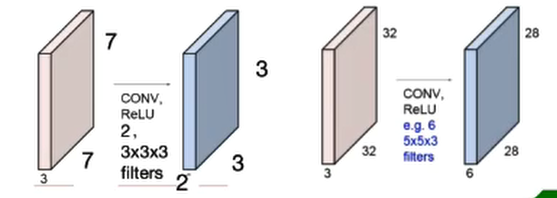
- 卷积神经网络->循环神经网络
- 传统神经网络、卷积神经网络，输入和输出之间是相互独立的
- RNN可以更好的处理具有时序关系的任务
- RNN通过其循环结构引入“记忆”的概念
基本组成结构
- 基本结构
- 传统结构对于一些问题，只能处理当前输入，不能够结合之前的输入信息进行处理，所以神经网络需要“记忆”
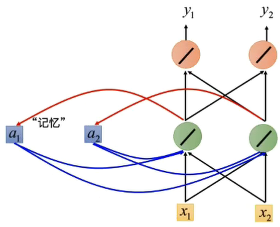
- 两种输入：正常输入，记忆单元的输入；
- 两种输出：正常输出，输出到记忆单元中；
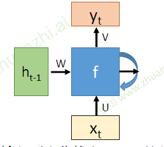
- U:从输入到隐藏状态的参数；W:从前一隐藏状态到下一个隐藏状态的参数；V:从隐藏状态到输出的参数；
- 是时间t处的输入
- 是时间t处的记忆，，f可以是双曲正切(tanh)等
- 是时间t时刻的输出，
- 函数f被不断利用；模型所需要学习的参数是固定的；这样的话就可以避免因为输入长度的不同而训练不同的网络。
- 深度RNN
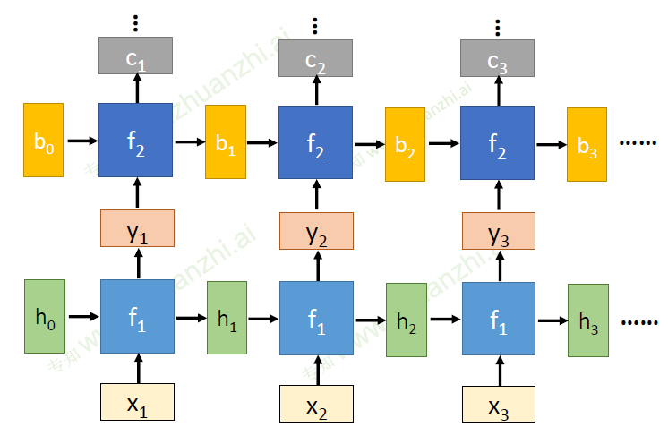
- 双向RNN
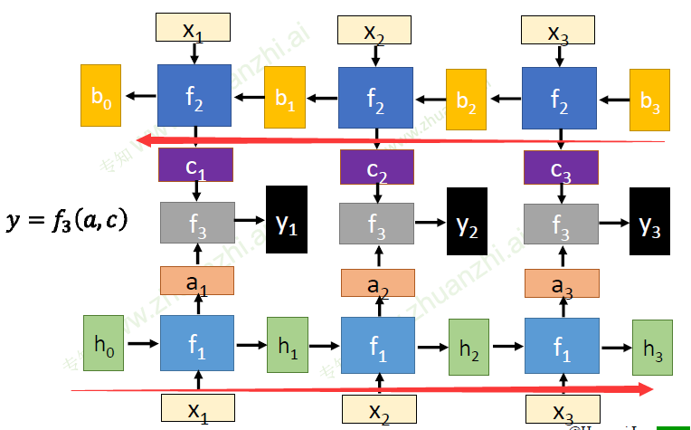
- BPTT算法
- BP算法
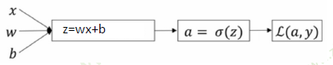
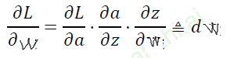
- 使用sigmoid函数时，可能在链式求导中的某一项为零，则整个求导为零，出现梯度消失
- RNN的基本公式
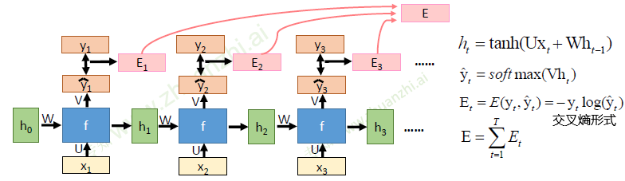
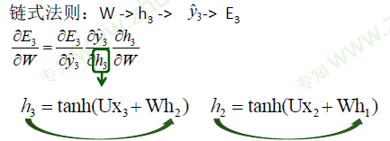
- 所以可以在此基础上继续展开，最终得到以下公式
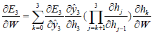
- BP算法
循环神经网络的变种
- 传统RNN的问题
- 当循环神经网络在时间维度上非常深的时候，会导致梯度消失或者梯度爆炸的问题
- ，对其求偏导
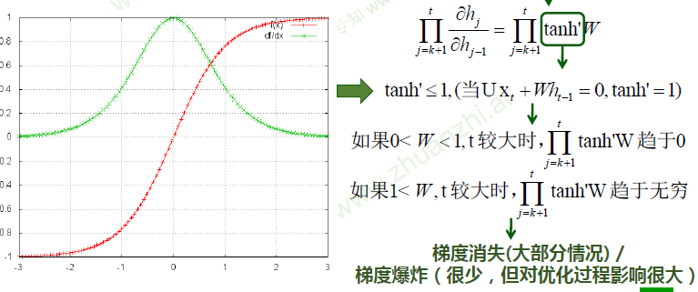
- 梯度爆炸的改进
- 权重衰减
- 梯度阶段：检查误差梯度的值是否超过阈值，吐过超过了那么就截断梯度，并将梯度设置为阈值
- 梯度消失导致的问题：长时依赖问题
- 随着时间间隔的不断增大，RNN会丧失学习到链接如此远的信息的能力
- 改进模型：LSTM，GRU
- LSTM（long short-term memory长短期记忆模型）
- LSTM拥有三个门（遗忘门，输入门，输出门）
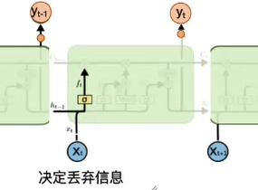
- 遗忘门： σ为sigmoid函数
- sigmoid层输出0-1之间的值，描述每个部分有多少量可以通过。0表示“不允许”，1表示“允许量通过”
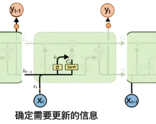
- 输入门： $ \overline C i = tanh(W_C[h{t-1},x_t] + b_C)$
- 首先经过Sigmoid层决定什么信息需要更新，然后通过tanh层输出备选的需要更新的内容，然后加入新的状态中；0 代表“不更新”，1 就指“完全更新”
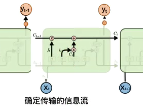
- 得到新的：
- 忘掉不需要的记忆信息；加入需要更新的出入信息
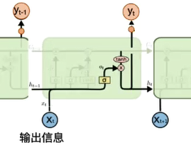
- 输出门： $ h_t = o_t * tanh(C_t)$
- 首先，通过sigmoid 来确定细胞状态的哪个部分将输出出去。然后，将细胞状态通过tanh进行处理并将它和sigmoid 门的输出相乘，最终仅仅会输出我们确定输出的那部分;0 代表“不输出”，1 就指“完全输出"
- RNN的“记忆”在每个时间点都会被新的输入覆盖；但LSTM中“记忆”是与新的输入相加（各自乘上一定的比例），一种线性操作
- LSTM：如果前边的输入对产生了影响，那这个影响会一直存在，除非遗忘门的权重为0
- LSTM变形
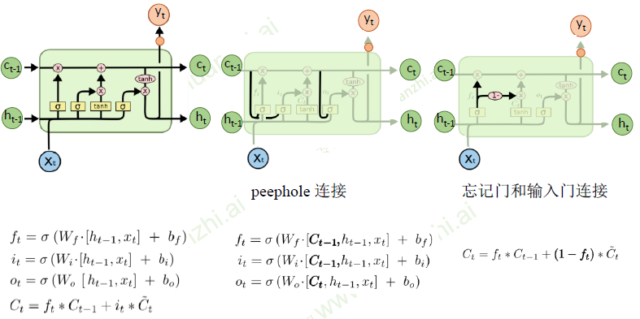
- GRU（Gated Recurrent Unit 门控循环单元）
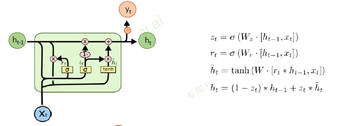
- GRU只有两个门，分别为重置门和更新门
- 重置门：控制忽略前一时刻的状态信息的程度，重置门越小说明忽略的越多
- 更新门：控制前一时刻的状态信息被带入到当前状态中的程度，更新门值越大表示前一时刻的状态信息带入越多
拓展
- 基于attention的RNN
- 受到人类注意力机制的启发，根据需求将注意力集中到图像的特定部分。
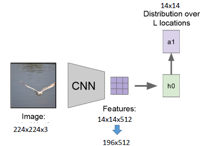
- 首先输入图像通过CNN，得到特征图（14x14x512）；
- 然后根据当前记忆学习到一个attention的权重矩阵a1(14x14)，并且权重矩阵在每个channel上是共享的
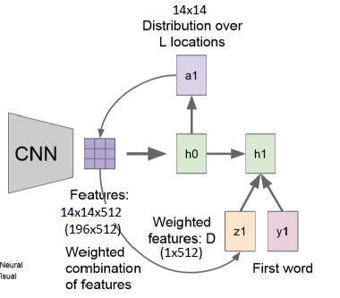
- 然后将权重矩阵a1与每一个feature map做运算，得到一个向量z1(1x512)
- 给出一个学习信号y1
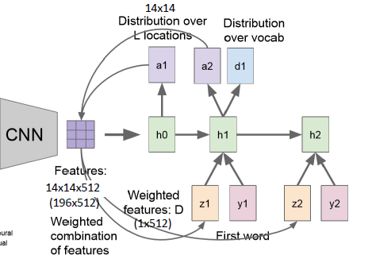
- 经过h1可以得到新的权重矩阵a2和输出d1，通过d1确定输出文字
- 然后权重矩阵a2与feature map运算，得到向量z2
- 通过这种形式一直运算下去，可以得到描述这幅图片的一句话
基于深度学习的目标检测方法
- 面临的挑战
- 太多尺度/位置的样本需要被测试
- 目标可能存在的情况太多
- 评价准则
- 准确率（Precision）：正确的框选物体个数a/所有的框选物体个数n
- 召回率（Recall）：正确的框选物体个数a/图像样本中应被框选的物体个数m（固定）
- 交并比（IOU,Intersection-over-union）：正确的标准框和算法给出的框，两者的交集/两者的并集
- 平均准确率（AP,Average Precision）
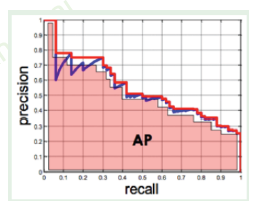
- 当算法框选的物体n越多，那么正确的框选物体个数a也会增多，使得召回率a/m变高。但这些框选的物体n中正确的框选物体a所占的比例可能会下降a/n，所以准确率下降。围成的面积就是平均准确率
- 目标候选生成 Selective Search（SS）
- 类似一种层次聚类算法
- 首先在图像中选择一些种子点，然后这些种子点向周围聚合扩大，直到把整张图片覆盖
- 在种子点扩大的过程中，算法会检测当前所包含的范围中的物体性的强弱；如果物体性较强，则产生一个候选框
- 难样本挖掘
- 在训练过程中，给予难以分辨的负样本更大的权重
- 非极大值抑制
- 在同一个目标，可能算法给出了多个框。这时候，把与指定框overlap大于一定阈值（通常为0.5）的其他框移除
- 两阶段目标检测方法
- 输入图片，得到目标候选
- 对候选框进行分类操作
两阶段目标检测算法
R-CNN
- 用Selective Search方法产生目标候选
- 并对目标候选进行规整（Warped），使得所有目标候选变成统一尺寸
- 利用CNN提取特征
- 首先使用ImageNet等数据集，训练一个用于图片分类的CNN模型（有1000个分类输出）
- 移除最后一个FC层（ImageNet分类层），替换为一个小的FC层（关注的21个类别，即21个分类输出的全连接层）并进行Fine-Tune（微调）
- 最后将规整好的目标候选输入到CNN网络中，提取CNN特征
- pool5属于比较底层的特征，fc6和fc7属于高层特征，所以这里使用的是fc7层的特征
- 利用SVM进行分类
- 为什么还要单独训练SVM？（CNN已经可以完成分类任务）
- CNN需要大量的训练样本（对样本质量的要求松）
- SVM用少量的样本就可以训练（对样本质量的要求严）
- 为什么还要单独训练SVM？（CNN已经可以完成分类任务）
- 存在不足
- 每个目标候选都进行特征提取，花费大量时间、空间且多有重叠部分
- 训练过程分步完成不是end-to-end（端到端：在一个神经网络里面整体完成）
- Warp操作会使图片失真
SPP-NET
Spatial Pyramid Polling（空间金字塔Pooling），解决了每个目标候选都要提取特征的不足
- 在R-CNN中，一张输入图片中的每一个目标候选都要进行Warp操作，然后输入到CNN中进行特征提取
- 而在SPP-NET中，进行了改进操作
- 首先将整张图片输入到CNN网络中，然后得到整体的特征图（在全连接层之前的操作，如下图）
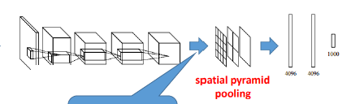
- 在特征图的层次上，根据目标候选（SS）的空间位置，将对应位置的region进行SSP Polling（多级pooling操作），最终得到一个定长的数组，输入到全连接层中（如下图）
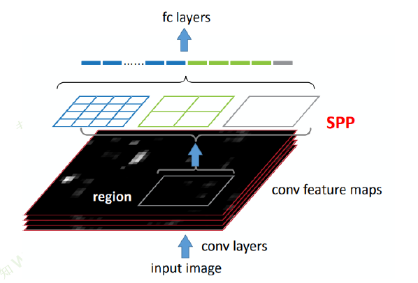
- 这样做就有效的解决了“每一个目标候选都要进行Warp操作”的麻烦
Fast R-CNN
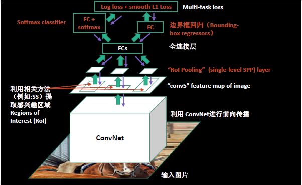
- 将整张图片作为CNN的输入，得到特征图
- 在特征图的层次上，根据目标候选（SS）的空间位置，将对应位置的region进行Rol Pooling（一个简单SPP Pooling，只具有一个空间层级），得到一个定长的特征向量，输入到全连接层中
- 最后用softmax进行分类以及一个全连接层进行边界框回归
- 但依旧是使用SS得到目标候选，在一定程度上限制了速度
Faster R-CNN
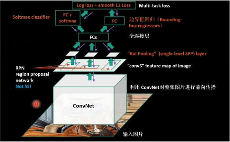
- 基本和Fast R-CNN一样，不过在确定目标候选的方法上，其不再使用SS，而是在最后一个卷积层后面插入一个Region Proposal Network（RPN）；RPN可以直接产生区域候选，不需要额外算法产生区域候选
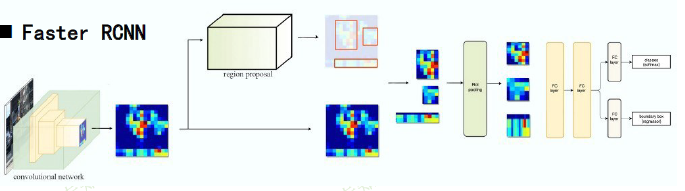
- Region Proposal Network（RPN）
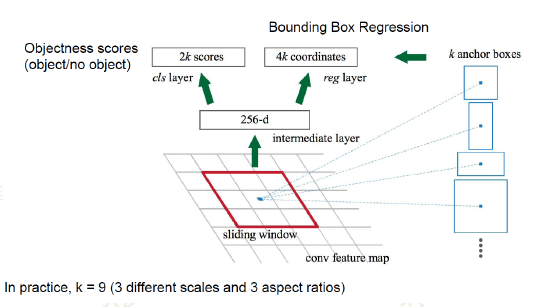
- 设置了一个滑动窗，在滑动窗口中有k个锚点框（anchor boxes），这些锚点框在滑动窗口中的位置保持不变
- 在滑动窗口的滑动过程中，锚点框会在特征图的对应位置进行运算，得到一个256位的向量，把这个向量输入到回归器和分类器中进行学习，得到输出
- 回归器为每个锚点框计算偏移（回归边界框）
- 分类器评测每个锚点框（回归后的）是物体的可能性
- 共享特征
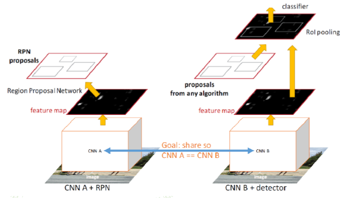
- 首先训练得到一个RPN网络（使用一个已有网络，如AlexNet）
- 使用这个RPN网络得到一些目标候选框数据
- 然后使用这些目标候选框数据和RPN网络训练得到Fast R-CNN网络
- 固定该Fast R-CNN网络的卷积层参数，然后使用该网络重新训练得到一个新的RPN
- 使用新的RPN得到新的目标候选框数据
- 使用新的RPN和新的目标候选框数据再次训练Fast R-CNN网络，其中卷积层参数依然固定
- 最后将Fast R-CNN网络和RPN合并即可
- 存在不足：不能实现实时检测（检测一张图片约耗时0.2秒）
FPN
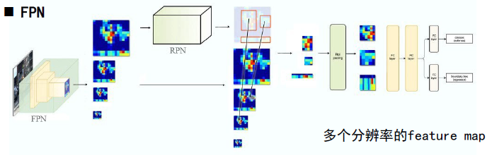
将高层的低分辨率、高语义信息的特征 和 浅层的高分辨率、低语义信息的特征 自然地结合
RFCN
-
出发点：图片分类的平移不变性与物体检测之间的平移变换性之间的矛盾
-
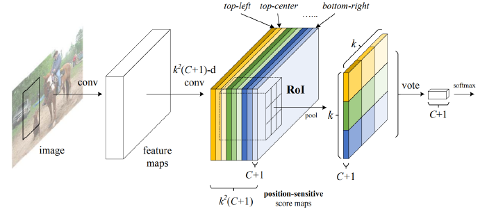
- 首先也是通过一个卷积网络得到feature map
- 然后再加入一个卷积网络输出个feature map
- 代表的就是位置
- 如上图，例如在最浅色的长方体，在进行pooling操作的时候只保留最右下角的块（位置敏感）；即不同的长方体块，在进行pooling操作的时候保留不同的位置块进行输出（学习其位置特征）
- 然后将这些pooling选择出来的块组合起来
单阶段目标检测算法
YOLO
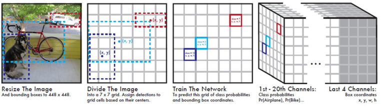
- 把输入图像划分为S*S个网格（S=7）。位于目标中心的网格负责检测该目标
- 每个网格会预测目标的可能的B个边界框和这个边界框是物体的概率（Objectness）；具体的，每个边界框会预测出5个值：x,y,w,h和置信度Pr*IOU（交并比）
- 每个网格预测C个条件概率Pr（所有的目标种类个数）===》于是得到一个7x7xC的立方体
- 在测试阶段，预测每个检测框的分数
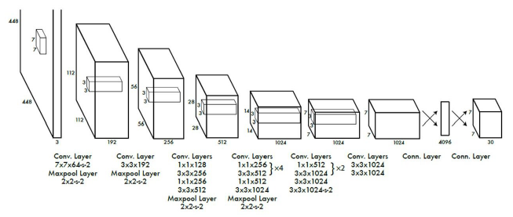
- 损失函数
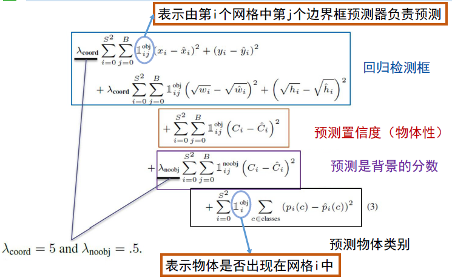
- 存在不足：小物体、重叠物体无法检测
SSD
Single Shot MultiBox Detector（单阶段多框的检测器）
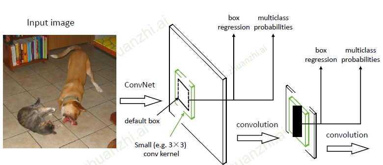
- 和Faster R-CNN中的RPN中的锚点框十分类似
- 在3x3的卷积核中设置了默认框，将默认框进行回归和分类，输出默认框的类别和回归后的尺寸
- 对于每个尺寸为m x n，通道数为p的特征层，SSD使用3x3xp的卷积核去产生对应于多个default boxes的物体概率分布（分类）和相对偏移（回归）
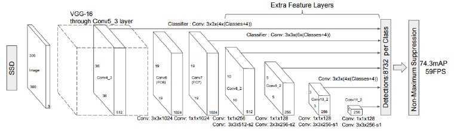
- 对不同尺度feature map中目标进行预测，用到多尺度特征的融合（和FPN相类似），提高检测精度
- 运用底层特征可以检测出小物体
- 同时提高速度和精度
RetinaNet
-
单阶段方法效果差
- 模型聚焦于大量的背景样本中（两阶段方法中RPN预筛选了大量背景样本）
- 直接对大量样本进行分类
- 解决思路：降低背景样本在训练中的权重
-
提出了一种Focal Loss
-
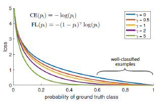
-
蓝色线代表交叉熵
- 可以看出，当背景框的预测接近0.8的时候（预测较为准确），但其损失loss仍为0.1、0.2的水品。这就会导致大量的背景样本仍可能会聚集产生比较大的损失，导致网络聚焦在背景样本上，而不是聚焦在想要预测物品上
-
紫色线代表Focal Loss
- 可以看出，在0.8左右的loss已经很小，所以不会让网络聚焦在这里，从而提高准确性
视频中目标检测
- DFF（Deep Feature Flow）
- 利用当前关键帧进行特征提取，然后计算下一帧的光流信息，将关键帧的特征信息和光流信息输入到新的任务中，得到下一帧的预测信息（利用光流信息指导特征传递）
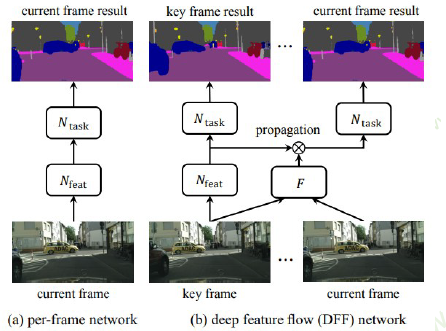